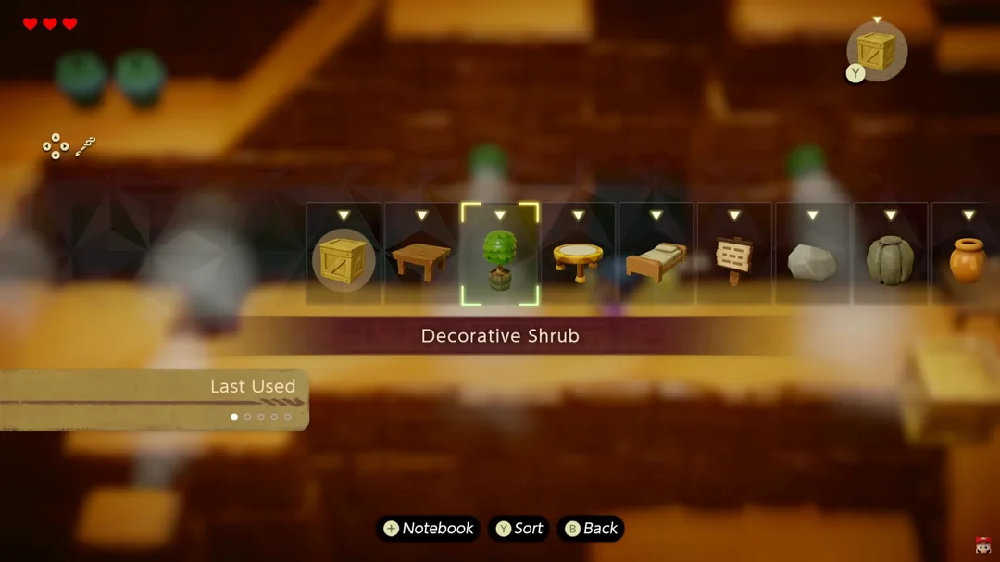
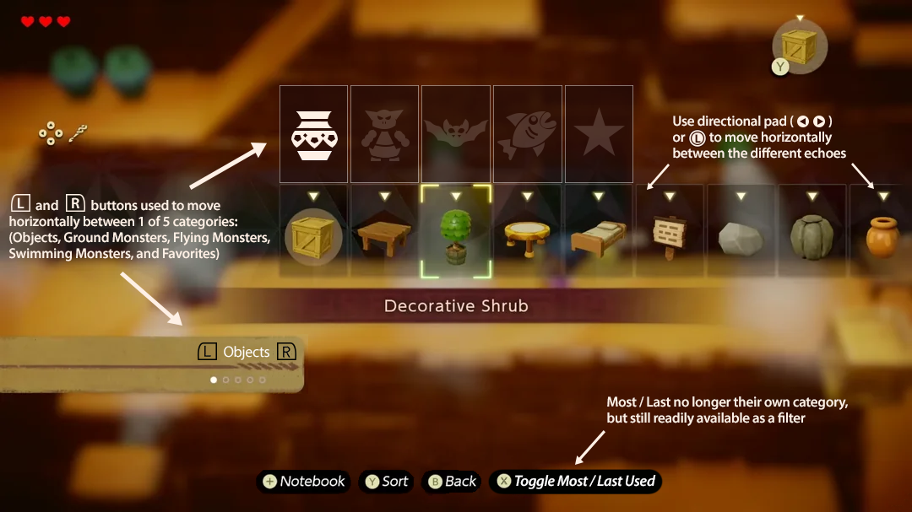
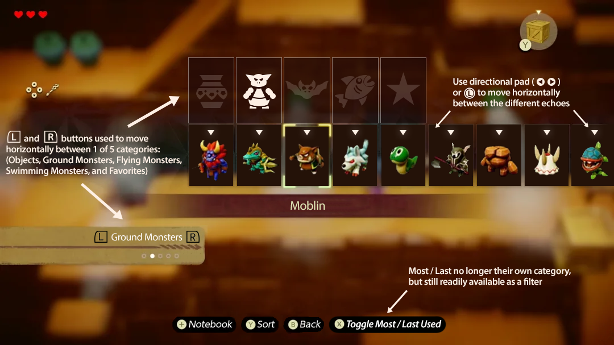
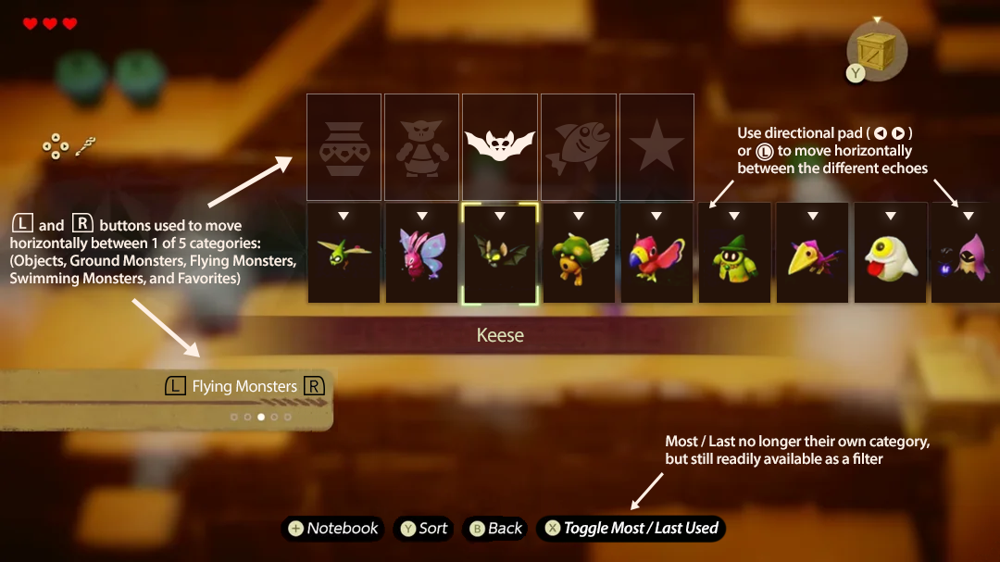

×





The intent of this project was to improve the infamous Echoes Menu, whereby the player has to spend
countless seconds scrolling left and
right to find the specific echo they are looking for in one long, horizontal list.
This UI fix adds in five principal categories, while allowing the player to
still toggle between most and last used.
You can click on the images below to enlarge them and bring up a slideshow.